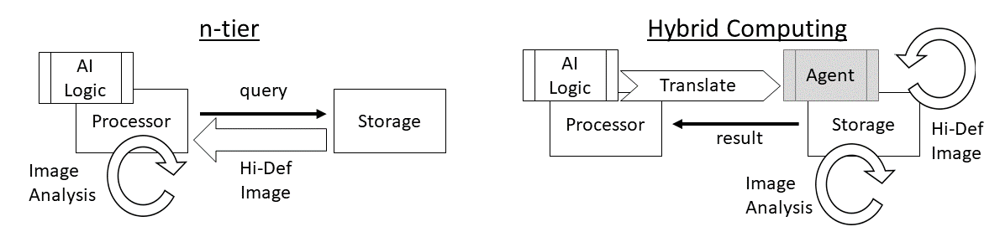
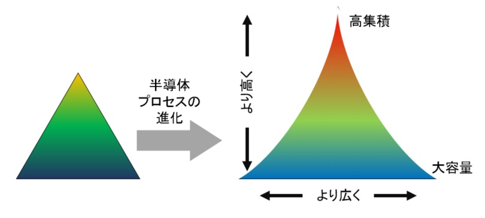

tonoi
Hybrid Computing (HC)
次世代IT処理基盤の研究開発
問題は、管理の手間です。クラウドが広まったきっかけに、Windows Update が大変すぎるから全部クラウド側にデータを保存するようになった事があります。自社でメールサーバーを持たずすべて Gmail でまかなうのも、管理コスト削減が目的です。
Our Services
分散処理を含む Hybrid Computing の提案
Hybrid Computing とは
弊社の推進する Hybrid Computing (HC) は、データ位置を表すポインターに特別な処理を施し、ストレージ機器や別プロセッサーなどに分散演算を行います。
Hybrid Computing とは
ストレージ機器に分散演算する事で、大容量データの転送を削減でき ネットワーク帯域不足 を解消します。ポインターを操作する事で、分散演算されるデータが一つの空間で表現され、従来のコンテナ技術などでの分散演算よりも開発者の負担が軽減され DevOps が可能となります。
技術詳細上図は高解像度 (Hi-Def) の AI 画像認識における通常処理と HC 処理の比較です。左の n_tier が通常処理で、Processor が Storage から Hi-Def Image を読み取り、Processor 上の AI Logic で Image Analysis (画像認識) を行います。右の HC では画像認識を行う AI Logic を Storage 上で実行できる形式に Translate (変換) します。変換結果は Agent となり、Storage 上で直接 Hi-Def Image を読み取り Image Analysis を行います。
読み込む画像が小さい場合は、AI Logic の転送が不要な分だけ n_tier が高速・高効率に動作します。画像が十分に大きい場合は AI Logic を Translate した Agent を転送する方が容易であるため、HC が優位となります。HC ではポインターに特別な処理を施すことで、データサイズに応じて左右どちらの処理方法も同じコードのまま動作する Hybrid な実装となっております。
特願 2018-089022: HC基盤技術となるデータアクセスポインター処理の変更
特願 2018-159325: HC実装技術となる分散演算方式
背景情報
一般的な Hybrid Computing
Wikipedia では、デジタルと電子式アナログを組み合わせた方式を Hybrid Computing としています。弊社ではより広くとらえ、Cloud と Edge、Heterogeneous など複数の方式を組み合わせた点を Hybrid としております。Memory Hierarchy
コンピューターの処理速度を制限する大きな要因の一つがメモリの速度です。すべてを SRAM で構成できれば最速のコンピューターになりますが、コスト高です。そこで、速度とコストを両立させるために多種類のメモリ・ストレージを組み合わせて現代のコンピューターは作られています。この組み合わせを下左図のMemoryHierarchy と呼びます。

メモリ速度の改善よりも半導体の集積度向上が早いため、Memory Hierarchy はピラミッド型から上右図のような中央がへこんだ鼓型に変化しつつあります。Memory Hierarchy の歪みが処理速度の制限要因となっています。
分散処理
Memory Hierarchy のピラミッドを歪ませない方法のひとつが、ピラミッドを小さく分けることです。Hadoop や Apatch Spark はビッグデータを細かく分けて分散処理をしています。非常に効果的な手法なのですが、さらなる高速化を求めると小分けにした処理ごとのデータ転送が制限要素になってきます。
In-Storage Processing
HPC (High Performance Computing) の世界では、データ転送させずにメモリ・ストレージ上で直接処理させる方法が開発されています。ただし、メモリもプロセッサも変化が激しい世界ですので、双方を同じの基盤にまとめる事は、大規模プロジェクトではリスクが大きく実現されておりません。弊社では、上記の考え方を推し進めた Hybrid Computing を研究開発し、Edge Computing の推進と DevOps の改善を目指しております。
HCによるAI分散処理ミドルウェア
AIの代表格であるDeep Learningは従来手法ではプログラミングしづらかった案件を Neural Network を利用して自動化します。
高性能ストレージ
S3Cubed 様の依頼により、NYRIAD の思想をもとにした新しい RAID Storage Software の企画・設計を行いました。大容量・高速化とともに、低消費電力を狙ったものです。
固定電話につながるドアホン
宅配便の再配達が運送業者の負担になっています。家庭向け宅配ボックスもありますが、本人確認や盗難の危険性もあり配達者側に抵抗があるようです。ドアホンと宅配ボックスを組み合わせ、本人確認をしながら遠隔地で荷物を受け取れる仕組みを開発しました。
5G対応IoT機器の自動設定
普及が見込まれるIoT機器は、製品ごとに初期設定方法が異なり利用者の負担となっている。機器の販売時に店舗のレジスターでユーザー登録と初期設定を終えられないか。
SNS認証による Wi-Fi接続
無線ブロードバンドルーターの設定は難しい。その要因の一つに、ユーザー名とパスワードが普段使っているものと異なる事がある。無線接続の設定にSNS認証が使えれば、ユーザーの利便性が向上するのではないか
Meet The Team

戀川 光央
代表取締役
経歴
2015年 tonoi株式会社 創設
マイクロソフト Xbox事業部を退職
2014年 IPv6普及への貢献によりCEDEC2014ネットワーク部門優秀賞受賞
2013年 Xbox One暗号化IPv6通信の開発に参加
理科大: 技術経営修士取得、フランス: Enterpreneurship program
2012年 野村総研 論文コンテスト 持続性社会実現への提案 佳作受賞
2010年 相互接続性検証試験評価ツール「エキスパート」を開発
2007年 Xbox 360の地デジ暗号化処理に関してマイクロソフト社長賞受賞
2002年 Xbox通信フレームワーク基盤特許取得 (P2P接続)
2001年 キャリア各社、ルーターメーカーとのネットワーク互換性検証ラボ設立
1997年 翔泳社より技術書出版、各種雑誌連載
1995年 マイクロソフト インターネット事業部に参加
1993年 シリコングラフィックス社企画本部に参加
電波実験社 PC-WAVE誌で分解・改造記事の連載、
BNN 技術書 共著
Get In Touch
〒182-0007
東京都調布市菊野台2-39-3
tonoi株式会社
戀川光央
Tel(fax): 050-3593-8530
直通: 090-9008-0122
mail: info@tonoi.co.jp